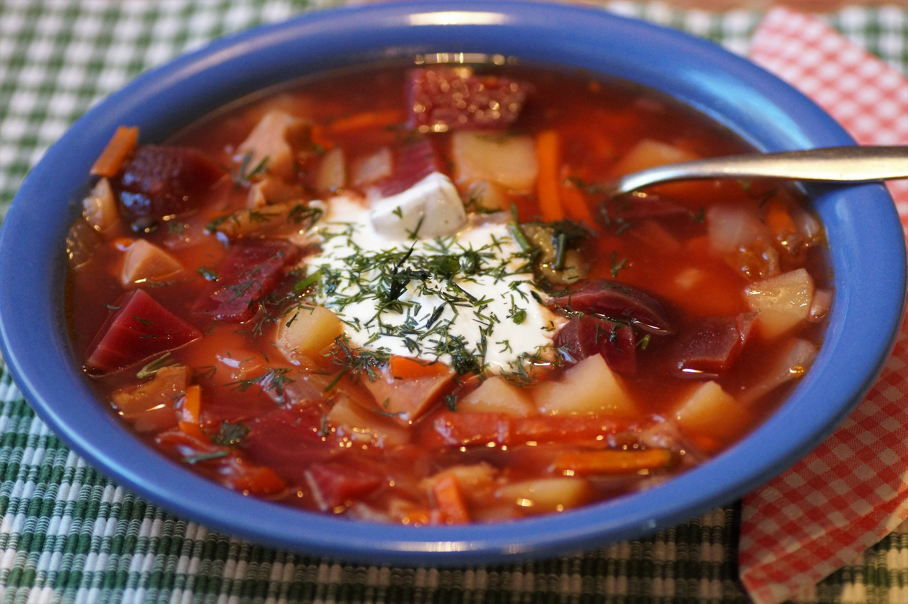

Borscht

Description
Borscht is a sour soup that is traditionally made with meat stock and boiled vegetables.
Ingredients
- 1 (16 ounce) package pork sausage
- 3 medium beets, peeled and shredded
- 3 carrots, peeled and shredded
- 3 medium baking potatoes, peeled and cubed
- ½ medium head cabbage, cored and shredded
- 1 cup diced tomatoes, drained
- 1 tablespoon vegetable oil
- 1 medium onion, chopped
- 1 (6 ounce) can tomato paste
- 8 ¾ cups water, divided, or as needed
- 3 cloves garlic, minced
- 1 teaspoon white sugar, or to taste
- salt and pepper to taste
- ½ cup sour cream, for topping
- freshly chopped dill or parsley for garnish
Steps
- Gather all ingredients.
- Crumble sausage into a skillet set over medium-high heat. Cook and stir until no longer pink. Remove from the heat and set aside.
- Fill a large pot halfway with water (about 8 cups) and bring to a boil.
- Add sausage to pot, cover pot, and return to a boil. Add beets and simmer for 10 minutes. Add carrots and potatoes and continue to cook until potatoes are tender, about 10 minutes more. Stir in cabbage and tomatoes.
- Heat oil in a skillet over medium heat. Add onion and cook until tender. Stir in tomato paste and remaining 3/4 cup water until well blended; transfer to the pot.
- Add garlic to the soup, cover, and turn off the heat. Let stand 5 minutes. Stir in sugar and season with salt and pepper.
- Ladle into serving bowls. Garnish with sour cream and dill. Enjoy!
References